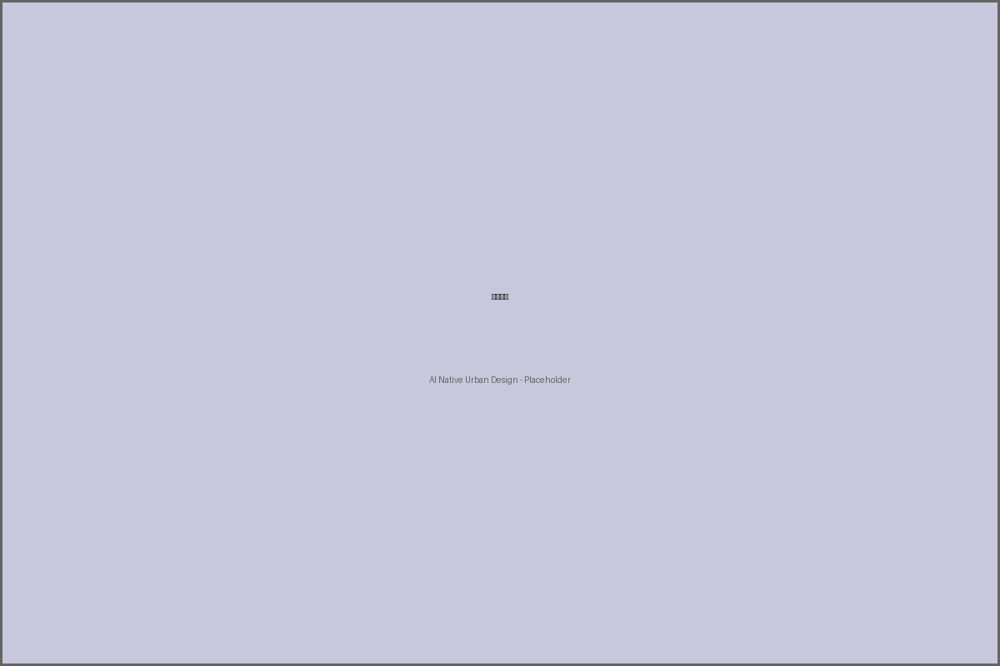
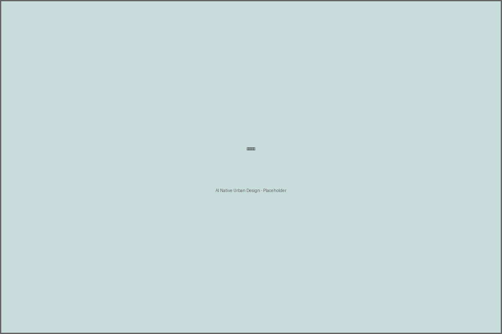

Figure 2: Three zones and two wings layout
Project: Centennial Jingzhang AI Innovation Belt
Author: ai-native-city
Date: 2026-01-08
This proposal presents an AI-native urban design for the 43.6 km² Jingzhang AI Innovation Belt in Haidian District, Beijing. The design integrates AI technologies into urban planning through three core zones and two development wings.

Figure 1: Site boundary and context
The proposal adopts a "Three Zones, Two Wings" spatial structure:
Figure 2: Three zones and two wings layout
| Land Use Type | Area (m²) | Ratio |
|---|---|---|
| Research & Development | 4,300,000 | 37.7% |
| Commercial & Business | 1,850,000 | 16.2% |
| Residential | 2,450,000 | 21.5% |
| Green Space & Parks | 1,680,000 | 14.7% |
| Transportation | 1,132,825 | 9.9% |

Figure 3: Land use structure
| Metric | Value | Unit |
|---|---|---|
| Total Site Area | 11,400,000 | m² |
| Average FAR | 2.2 | ratio |
| Green Space Ratio | 14.7 | % |
| AI Scenario Coverage | 85 | % |
| TOD Coverage | 72 | % |
The proposal includes 10 AI application scenarios covering smart transportation, digital governance, intelligent buildings, and community services.

Figure 4: AI scenario applications
This proposal complies with:
This AI-native urban design proposal provides a comprehensive framework for developing the Jingzhang AI Innovation Belt into a world-class smart city district, balancing technological innovation with livability and sustainability.